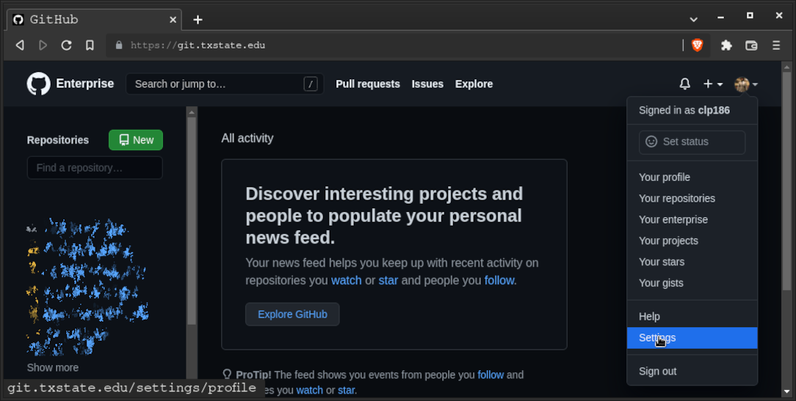
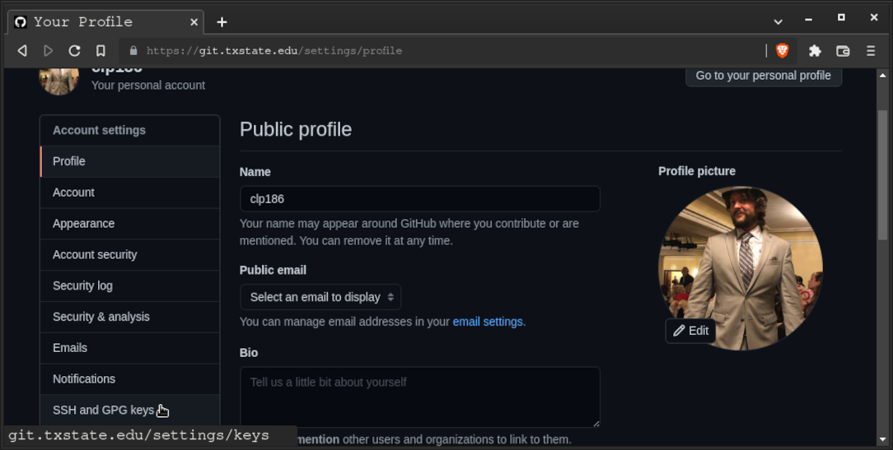
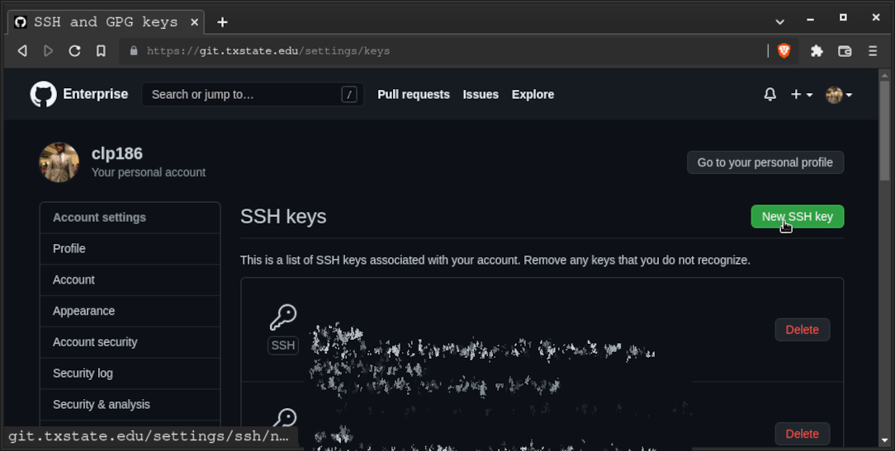
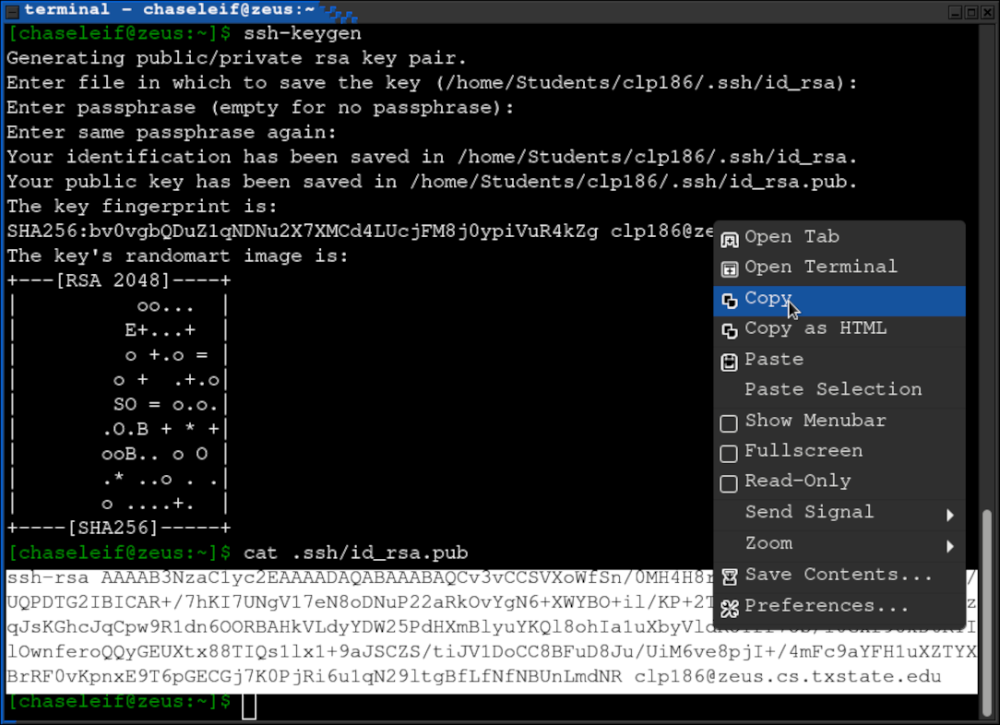
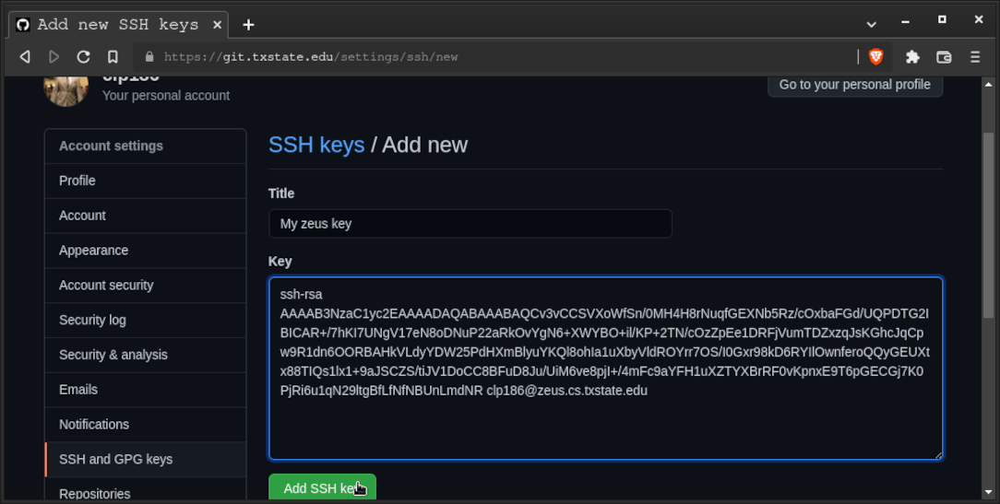
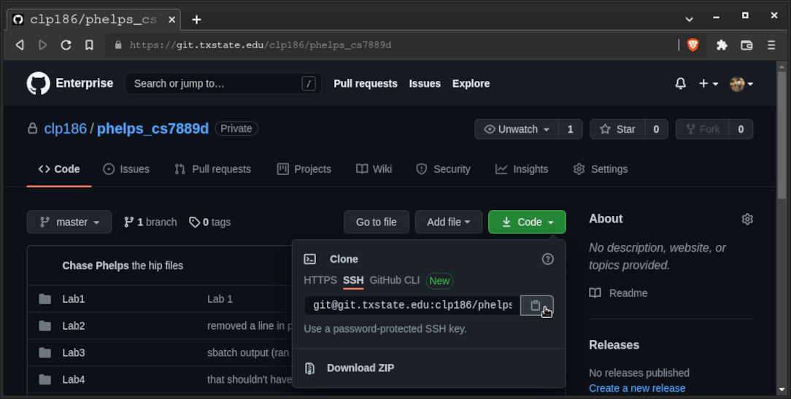
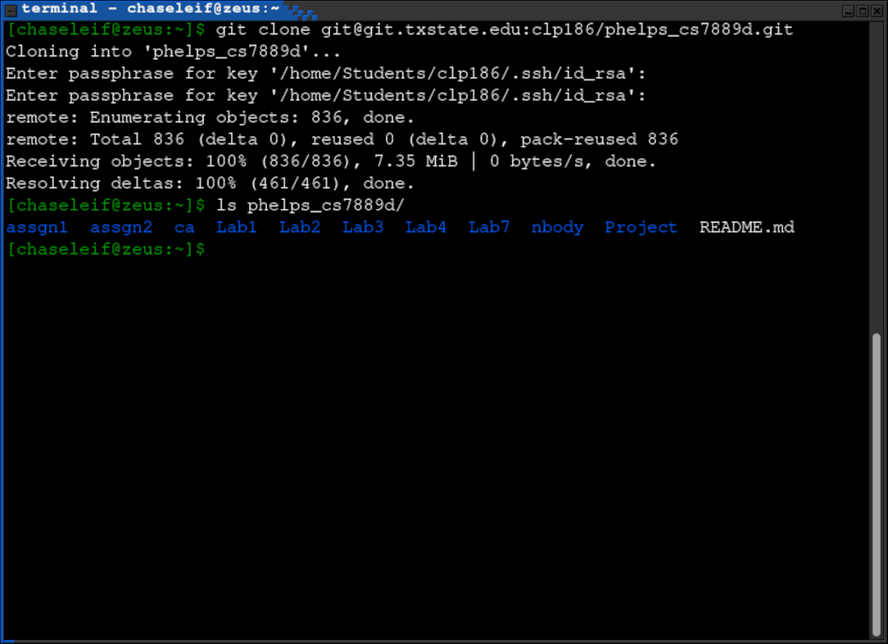

In the Git website, go to the account settings

From the account settings, go to the SSH and GPG keys section

Select to add an SSH key

Get your SSH key from Zeus
- Create a key using ssh-keygen if you haven't done so before
- Press enter to accept the default filename
- Enter a password, this password will be used for this ssh key
- Use the cat command to print the generated id_rsa.pub
- Copy the printed text to your clipboard

Paste the copied id_rsa.pub into the Git website to add it
- Only share the public key, keep the private key private
- Give the key an appropriate title so you know which key this is

Copy your repo's SSH clone link
- Now you can use git using the SSH link and your id_rsa key
- You can clone, push, pull, etc.

From Zeus, clone your repo, enter your SSH password when prompted
